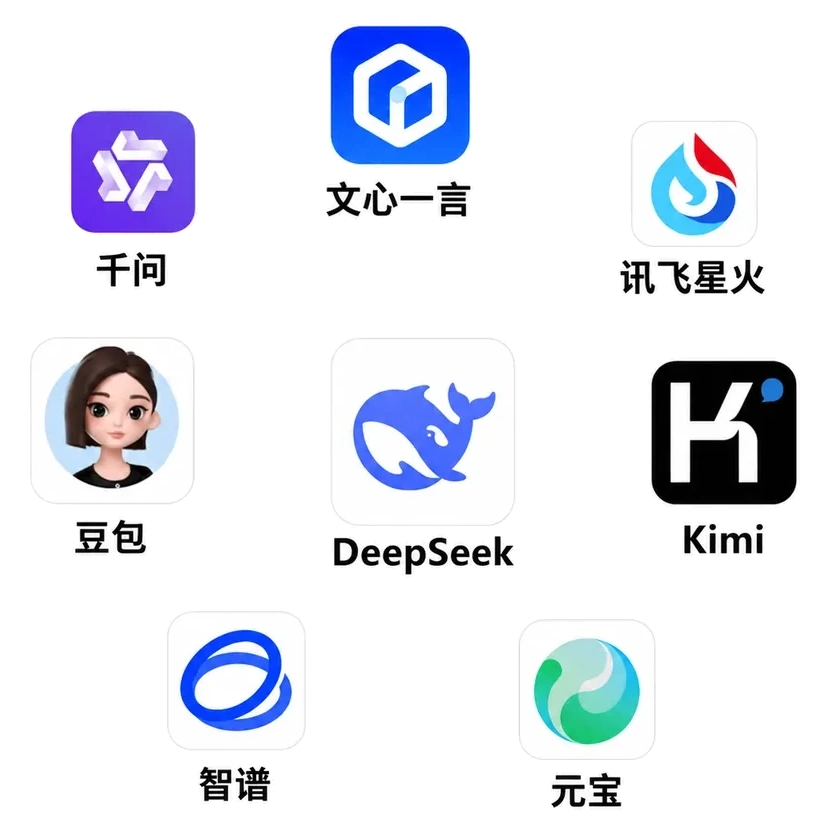

Brand Visibility
让品牌进入 AI 候选集合
当采购方向大模型咨询意向产品时，往往会深入对比很多细节。企业要想让 AI 给出对自己有利的回答，首先必须被识别为清晰完整的品牌整体，并让 AI 充分理解自身的真实实力，才能在竞品对比中稳定进入核心候选集。
优先卡位第一轮筛选
→
用户正在从传统搜索网页与翻阅链接，转向直接向 AI 提问与索要明确答案。
AI 正在替采购方完成第一轮筛选与对比决策。
邻里GEO（NextGEO） 帮助徐州及高客单价 B2B 企业建立 AI 能理解、验证和推荐的品牌知识基础设施，让企业在 AI 搜索时代获得新的商业增长入口。

AI 搜索正在把用户的搜索、比较和决策压缩成一次对话。邻里GEO 关注的不是短期黑盒排名技巧，而是品牌能否在 AI 答案中被看见、被说对、被采信。
当采购方向大模型咨询意向产品时，往往会深入对比很多细节。企业要想让 AI 给出对自己有利的回答，首先必须被识别为清晰完整的品牌整体，并让 AI 充分理解自身的真实实力，才能在竞品对比中稳定进入核心候选集。
大模型在抓取全网碎片信息生成推荐时，如果缺乏逻辑可靠的权威信源，极易产生严重幻觉，甚至采信竞品对您的负面唱衰。企业必须通过 GEO 建设，为大模型提供易于理解的业务边界、技术参数与资质实证，让 AI 准确理解您想要表达的内容，彻底杜绝错误描述与偏离。
GEO 时代，所有企业官网都必须被重构。当采购决策越来越依赖便捷的 AI，官网不再只是给访客翻看的宣传手册，而是方便大模型抓取与分析事实的阵地。通过普林斯顿因子规范站点结构，能让 AI 在给出结论时直接采信官网事实，打上权威的 Citation 引用角标，让您的方案更容易被模型采纳为标准答案。
我们把 GEO 拆解为标准闭环：先摸清大模型目前如何描述你，再找到断点与偏见，最后把内容、技术底座和证据链变成可量化复盘的执行流程。
在主流 LLM（DeepSeek、ChatGPT、Kimi、豆包、通义）中评测品牌被提及率、回答偏见与关键能力召回率。
梳理企业实体（Entity）、核心技术、产品优势与案例库，消除模棱两可的模糊定义，建立结构化事实图谱。
改造官网代码：注入 Schema.org、配置 llms.txt、生成 Clean Markdown，让大模型爬虫秒懂并直接采纳。
在主流 AI 检索依赖的第三方信源（知乎、百科、行业垂直站、开源社区）铺设一致的事实印证，形成共识闭环。
Canonical Answers
这些页面用于覆盖“什么是 GEO”“AI Search 怎么做”“GEO 与 SEO/AEO 的区别”等高频问题。